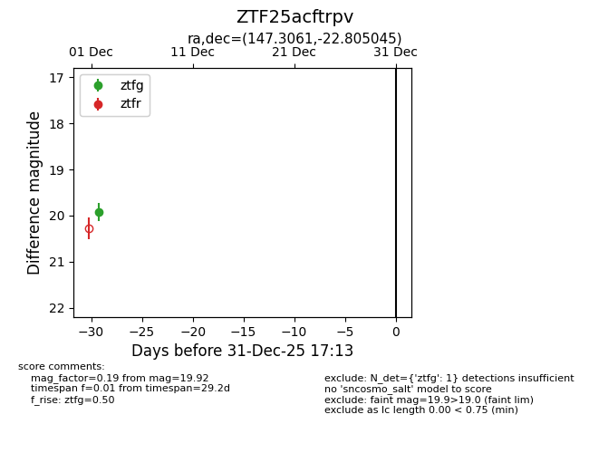
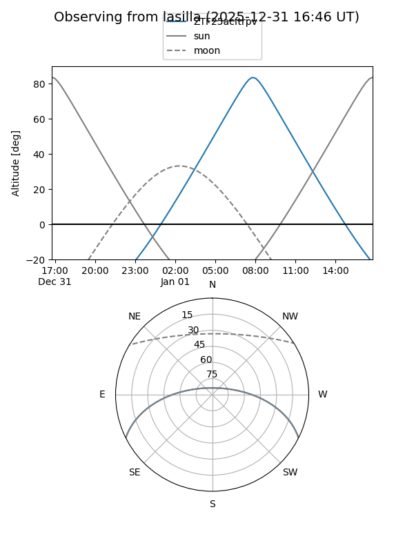
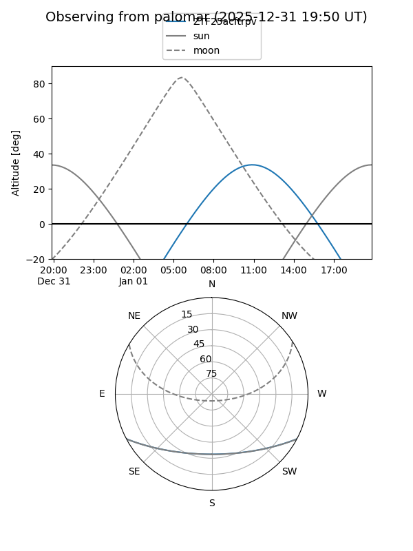

ZTF25acftrpv
Target ZTF25acftrpv at 2025-12-26 16:17
Aliases and brokers:
FINK: fink-portal.org/ZTF25acftrpv
Lasair: lasair-ztf.lsst.ac.uk/objects/ZTF25acftrpv
ALeRCE: alerce.online/object/ZTF25acftrpv
alt names
ZTF25acftrpv (ztf,fink_ztf)
Coordinates:
equatorial (ra, dec) = 147.3061,-22.80504
equatorial (HMS+DMS) = 09:49:13.46,-22:48:18.16
galactic (l, b) = (257.1017,+23.43788)
Flags:
Photometry:
last ztfg=19.92
1 ztfg detections
Lightcurve

Visibility


Additional plots